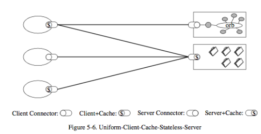

Rest and software architecture
Building REST: Providing a uniform interface
- Interface constraints allow a standard interface for all requests
- Simplify maintenance

Building REST: Code on Demand
- Simplifies clients, Extendibility (add new components, new features)
- Reduces visibility, increases complexity — this step is optional

Building REST: The REST Architecture
Example 46
- This example is about coding convention checking:
- How to use external executable file in your application.
- Python: subprocess
- Four steps:
- Prepare command
- Open log files
- Execute external file
- Wait until it is done.
- Pylint:https://www.pylint.org/
- Checkstyle: http://checkstyle.sourceforge.net/
- Some issues with Example 45. I will fix it and introduce it in our next class.
Final Group Project Presentation
- We will use the following two Google forms to grade your final group project presentations:
- April 23: https://forms.gle/XXzVkBm67CViY8Sv7
- April 28: https://forms.gle/bHfCJuKbRUdB5K7i8
- Need to demo your web app
- Rubric to grade your presentation
About final exam
- CSCI 4710 and CSCI 6710: You can choose any day between April 30 – May 3.
- Closed book exam
- Online Blackboard, 1 hour and 30 minutes
- Similar to the midterm.
- 40 multiple choices questions
- 7 short answer questions for CSCI 4710, 8 short answer questions for CSCI 6710
- Final exam covers all the things we have learned this semester
- No sample questions
- I will upload a video about Docker by the end of this week, required
| Index | Prev | Next |